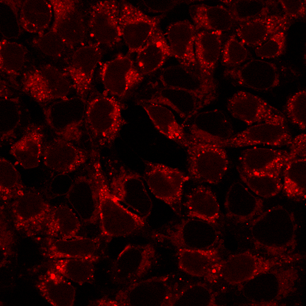

FIRST-YEAR ROTATION PROJECTS
At least three rotations are required for WashU DBBS students before choosing a thesis lab:
Understanding the intracellular effects of Cationic Amphipathic Drugs on organelles
Rotation at Peterson Lab, 8/2019-11/2019
Brief Description: Cationic Amphipathic Drugs are utilized in various clinical applications,
but their underlying intracellular mechanisms are largely unknown. We hypothesized that due to different drug treatments,
there could be different changes of morphology or abundance of multiple organelles, ultimately contributing to distinct mechanisms of autophagy.
In this rotation, I successfully completed the imaging tests to investigate the intracellular drug effects.
HEK293T cells stained with Lysotracker:

Brief Description: A. Multiplexing cancer cell lines by cell hashing to improve the super-loading ability of scRNA-seq platforms. B. Performing functional validations on potential EMT-driving transcriptional factors.
Brief Description: